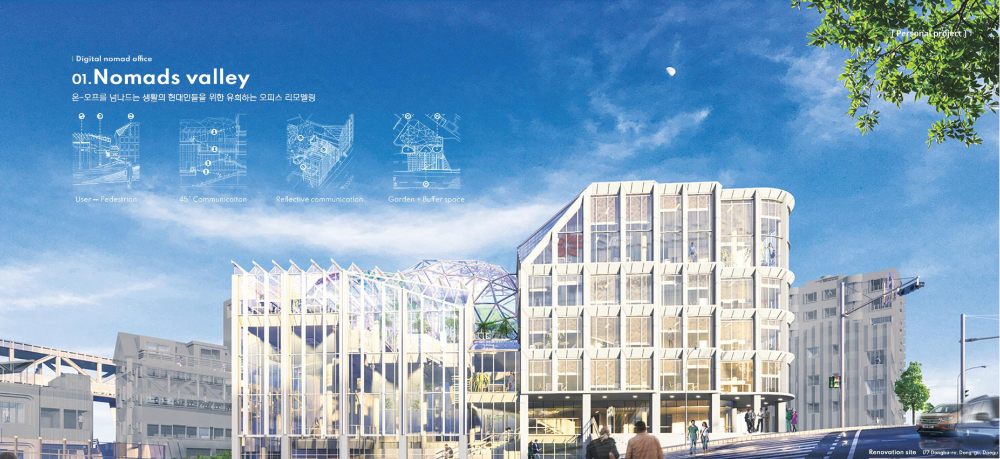

/ 01
Nomads Valley Digital nomad office
온-오프를 넘나드는 생활의 현대인들을 위한 유희하는 오피스 리모델링
Three building masses reorganized around a central outdoor garden. The project introduces Agile Workplace — an office choreographed for accidental encounter, where 45° buffer spaces fold informal knowledge-sharing into the workflow of a Multi-Persona generation.
